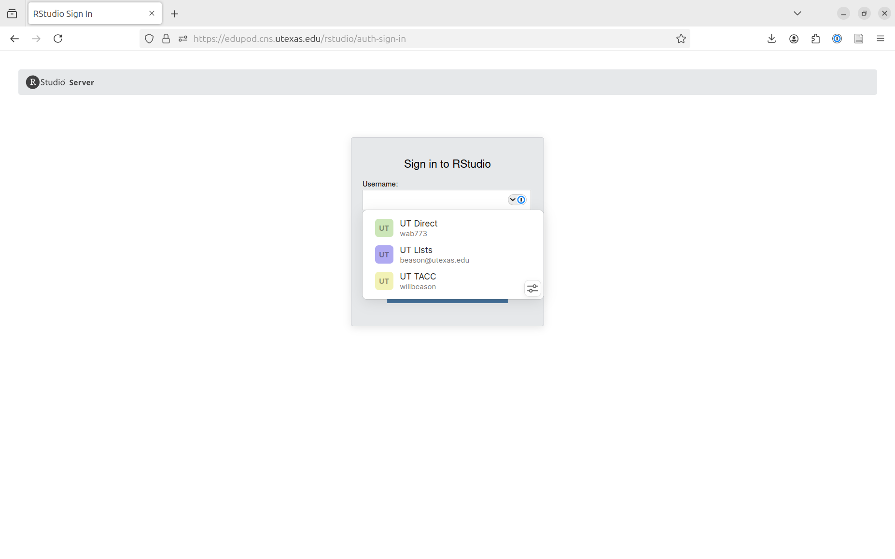
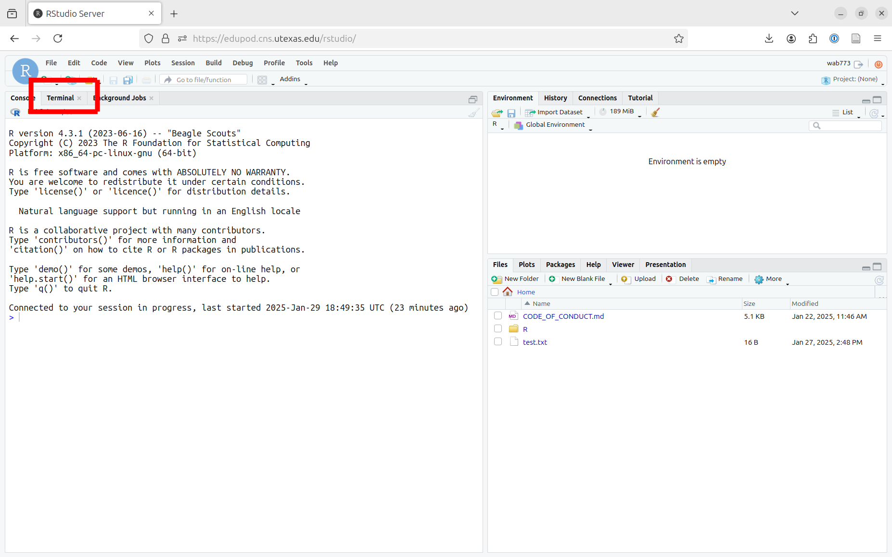
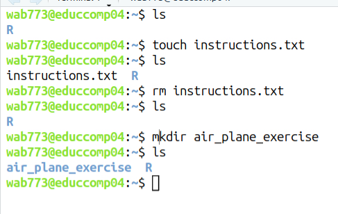
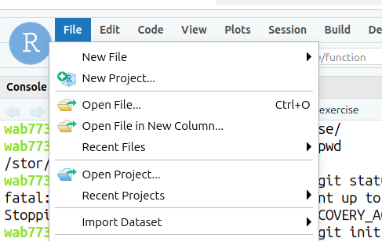
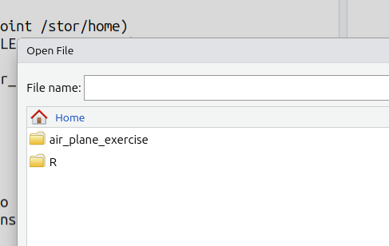
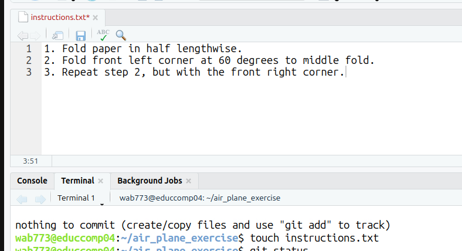

14 Git basic workflow
14.1 Overview
In this exercise, we will practice basic Linux command lines, including ls, cd, mkdir, touchand basic git commands including git status, git add, git commit, and git log.
Once we are able to move around in the shell, create files and directories, then we are ready for the basic git workflow, which is:
- edit a file
- save those edits
git addgit commit -m "commit message"
edit → save → add → commit
14.2 Working with files and the commandline in Rstudio
Goal of this step: get familiar with basic Linux command line instructions:
pwd, which shows the path to your current working directoryls, which lists the contents of your current directorycd, which lets you change the directory you’re inmkdir, which makes a new directorytouch, which creates a new (empty) filerm, which removes files and directories
If your screen is full of unwanted text, hit CTRL+L to clear it.
Log in to the EDU Pod Rstudio interface: https://edupod.cns.utexas.edu/rstudio/

Use the same username and password you use to log into UTDirect and Canvas. You should see a screen that looks like the below. This is the interface for working with R, which we’ll come back to later in the course.

For now we’re interested in getting to the terminal. You should see a tab labeled Terminal, marked in red above.
You may not see a terminal tab, or in the future might accidentally exit out of it. To get the terminal back, you can either use the toolbar at the top of the screen with Tools → Terminal → New Terminal, or use the keyboard shortcut ALT+SHIFT+R.
You should be greeted by a mostly blank screen, with a line that looks like this near the top:
wab773@educcomp04:~$This basically just says who I am, wab773, that I am signed in to a computer called educcomp04, and that I am in a directory called ~. The dollar sign indicates that I can type a command after it.
When you perform actions in a terminal, they are performed in what is called your “working directory”. This just means that if you tell your computer to say, make a file, it will default to making it right where it thinks you are at that moment. So first, we want to know how to make sure we know where the computer thinks we are.
Type pwd in the terminal and hit the ENTER key. (You always have to hit ENTER to tell the computer to execute the command.) You should see something like this:
wab773@educcomp04:~$ pwd
/stor/home/wab773This is where the computer thinks we are, and where it will assume we want it to do things we tell it to do (unless we tell it otherwise).
Feel free to copy and paste commands from here to the terminal - you need to hit CTRL+SHIFT+V to paste instead of just `CTRL+V``.
Type ls in the terminal. It will list the files and directories in the current working directory.

Type touch instructions.txt in the terminal to create a new text file named “instructions”. We’re actually running a program called touch with the argument instructions.txt. When the touch program runs, it looks for its first argument, then makes a file with that name - in this case instructions.txt. Type ls to see that you’ve successfully made the file.
wab773@educcomp04:~$ touch instructions.txt
wab773@educcomp04:~$ ls
instructions.txt RNote that just when we ran the touch command, the computer didn’t say anything - it just did its task and asked us for the next command. Many commands are like this - if they don’t encounter any problems running, they won’t display any output.
At times you’ll want to remove files you’ve created. In this case, we actually want to make instructions.txt somewhere else and so we need to remove the file. You can remove files with the rm command. It works much like touch - the argument you pass to it is the file that rm will try to delete. Type ls to verify the file has been deleted.
wab773@educcomp04:~$ rm instructions.txt
wab773@educcomp04:~$ ls
RRight now we’re in a special directory called the “home” directory which is unique to every user. This is similar to your desktop on your computer, or “My Documents” on Windows: someone else logged into your computer on a different account will see different things on their desktop and in their “My Documents” folder.
We want to be a bit more organized rather than just putting files everywhere (think of a desktop cluttered with dozens of files), so we’ll make a new directory for this exercise. We can make directories with the command mkdir. Using the mkdir command is just like touch and rm - what you put after the command is the name of the directory you want to make.
Type mkdir air_plane_exercise in the terminal. It will create a new directory with a specified name in the file system. Verify that you’ve successfully made the new directory with ls.
wab773@educcomp04:~$ mkdir air_plane_exercise
wab773@educcomp04:~$ ls
air_plane_exercise RYou may notice that ls makes the “air_plane_exercise” directory appear a little different than the file “instructions.txt” above. This can be a handy way of telling directories and files apart.

You can remove directories with rm, but you need to type rm -r [DIRECTORY] to do so.
Now we want to tell the computer that we want future commands to take place inside the directory we’ve just made - we don’t automatically enter a directory just because we made it! To move into a directory, use the cd command. Type cd air_plane_exercise in the terminal to change the current working directory to air_plane_exercise, and use pwd to verify you’ve entered the directory.
wab773@educcomp04:~$ cd air_plane_exercise/
wab773@educcomp04:~/air_plane_exercise$ pwd
/stor/home/wab773/air_plane_exerciseNote that the text before the $ changed to show our new location. This is a useful way to check that the computer thinks we’re in the right spot - doing something in the wrong directory is a common enough mistake that by default most terminal applications show this.
The ~ indicates the home directory. You can almost always use ~ in commands to refer to the home directory, so cd ~ will take you to your home directory if you get lost.
14.3 Creating a git repository (“repo”)
Goal of this step: learn git init.
Type git init in the terminal. The git init command is typically used to start a new repository or to convert an existing project into a Git repository. On success, you should see something like the below:
wab773@educcomp04:~/air_plane_exercise$ git init
Initialized empty Git repository in /stor/home/wab773/air_plane_exercise/.git/If you make the wrong directory into a repository by mistake, you can undo that by going to the directory with cd and then removing the hidden .git directory there with rm -r .git.
14.4 Git status, add, commit
Goal of this step: learn git status, git add, and git commit
We’ve got a Git repository now, but there’s nothing in it. Let’s re-make our instructions.txt file with touch instructions.txt.
Now we’ve got a file in the repository - but what does this mean? Helpfully, git has another subcommand, git status, which shows the current state git thinks our repository is in.
wab773@educcomp04:~/air_plane_exercise$ touch instructions.txt
wab773@educcomp04:~/air_plane_exercise$ git status
On branch master
No commits yet
Untracked files:
(use "git add <file>..." to include in what will be committed)
instructions.txt
nothing added to commit but untracked files present (use "git add" to track)The main takeaways from the response from git status are:
- Git says we haven’t committed anything into the repository yet.
- Git sees that we have a file instructions.txt.
- Git says it hasn’t been told to “track” that file.
We do want that file to be tracked, so we can git add the file per the command’s suggestion. The git add command works like most of the others we’ve dealt with - we just tell it the name of the file to add, and it will do so. Using git status, we can now see the file is now being tracked.
wab773@educcomp04:~/air_plane_exercise$ git add instructions.txt
wab773@educcomp04:~/air_plane_exercise$ git status
On branch master
No commits yet
Changes to be committed:
(use "git rm --cached <file>..." to unstage)
new file: instructions.txtWe want “instructions.txt” to actually say something, so let’s make some changes to the file save it. Open a file in Rstudio with File → Open File:


Just make some changes to the file and save it (you can use CTRL+S or File →). Rstudio indicates when files have unsaved changes by making the filename red and adding an asterisk to it, like so:

So we’ve got a tracked file and some changes. Are we ready to commit? Let’s see what git status has to say.
wab773@educcomp04:~/air_plane_exercise$ git status
On branch master
No commits yet
Changes to be committed:
(use "git rm --cached <file>..." to unstage)
new file: instructions.txt
Changes not staged for commit:
(use "git add <file>..." to update what will be committed)
(use "git restore <file>..." to discard changes in working directory)
modified: instructions.txtSo Git sees our instructions.txt file and is tracking it, but it says there are “Changes not staged for commit”. This means that while it knows we are interested in tracking the file, we haven’t told it we want the changes we just made to be commited to the repository.
Type git add instructions.txt in the terminal to stage changes for a commit. Type git status to verify that Git now sees we want to commit the instructions we typed.
wab773@educcomp04:~/air_plane_exercise$ git status
On branch master
No commits yet
Changes to be committed:
(use "git rm --cached <file>..." to unstage)
new file: instructions.txtIt can become tedious to type in all of the files you want added to your repository. As a shortcut, you can type git add . to track all files and changes to Git.
Since Git isn’t complaining about anything, if we commit then the current state of the directory will be committed.
Type git commit -m "paper plane1"to save changes to the local repository. It takes all of the changes staged with git add and stores them as a new commit with a message describing the changes.
wab773@educcomp04:~/air_plane_exercise$ git commit -m "paper plane1"
[master (root-commit) ddca4f4] paper plane1
<long output excluded>-m message
It’s very easy to just type git commit and forget to type a message. In most cases, this will put you in an obtuse text editor called “vim”. While powerful, that editor is both very difficult to use and not part of our class. You can safely exit that editor by typing :cq (these should appear in the bottom left of your screen) and hitting ENTER. If that doesn’t work, try hitting ESC and trying again. If that doesn’t work, you can exit the terminal by clicking the “X” by the “Terminal” tab and launching a new terminal. See “Getting your terminal back” above.
Type git status to check status again.
wab773@educcomp04:~/air_plane_exercise$ git status
On branch master
nothing to commit, working tree cleanThis message means that Git doesn’t see any changes between our directory and the most recent commit.
Let’s make some more changes:
- edit “instructions.txt”, save it, git add it, git commit it
- create another text file named “license.txt”, edit/save it, git add it, git commit it
14.5 Using git log to understand what is in the repo
Goal of this step: learn git log
Type git log in the terminal to display the commit history. It will show a list of all commits in the current branch, along with information about the author, date, and commit message for each one.
The latest message will show at the top and the oldest will show at the bottom.

You can also use git log --oneline --abbrev-commit --all --graph to show git log in short. 
In class we will mostly add --color to this as well:
git log --oneline --abbrev-commit --all --graph --decorate --colorYou can learn more about reading the output of that command here: https://stackoverflow.com/questions/22313343/git-graph-what-do-the-lines-and-asteriks-denote
The * characters show a single commit, the lines help us understand the branches.
That command is long and quite hard to remember. Fortunately, Git allows us to specify an “alias”, effectively letting us define a new subcommand that does all of that:
git config --global alias.viz 'log --oneline --abbrev-commit --all --graph --decorate --color'Now, if you type git viz in the future, it will act as if you’d typed that entire command!
The --global flag tells Git that you want to have the git viz subcommand available in all repositories on your computer. If you forget that flag, you’ll have that subcommand in your current repository, but no others!
14.6 Git Commands
Git init
git initcreates a new repository.Git add
git add [file]is a command used in Git to stage changes for a commit. It allows you to select which changes in the working directory will be included in the next commit.Git commit -m “message”
git commitsaves changes to the local repository. It takes all of the changes staged withgit addand stores them as a new commit with a message describing the changes. It is important to remember the quotes around your message so Git knows you want the entire message as the commit message.Git status
git statusshows the state of the working directory and the staged changes, and it indicates which branch you are currently on.Git log
git logis to display the commit history of a repository. It shows a list of all commits in the current branch, along with information about the author, date, and commit message for each one.